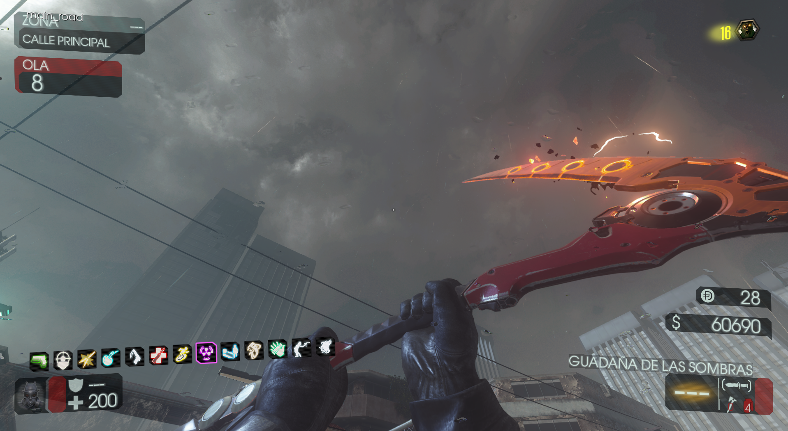
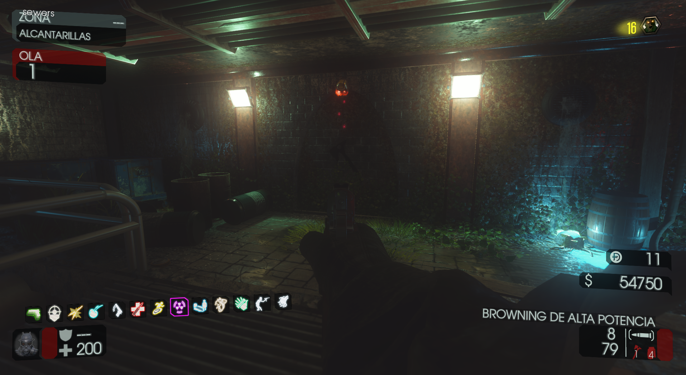
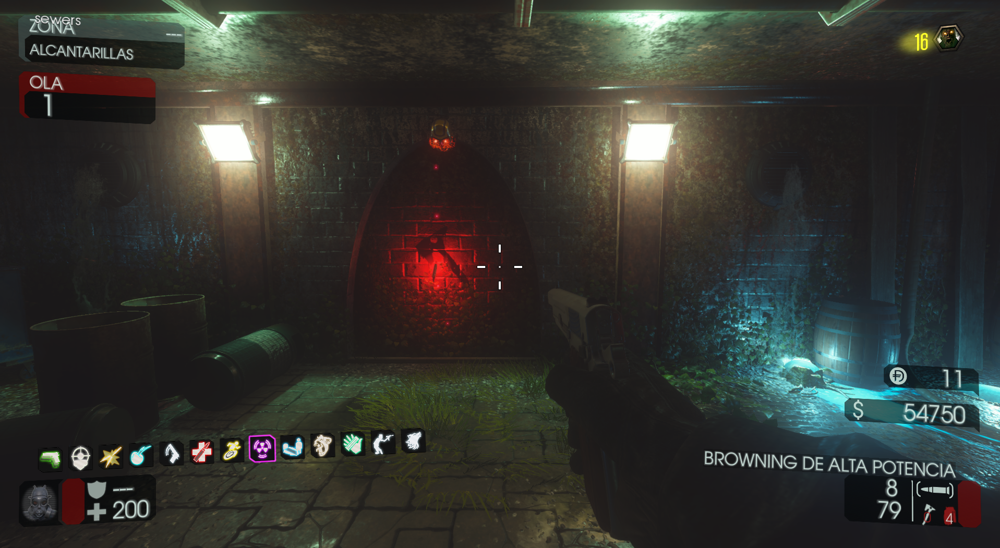
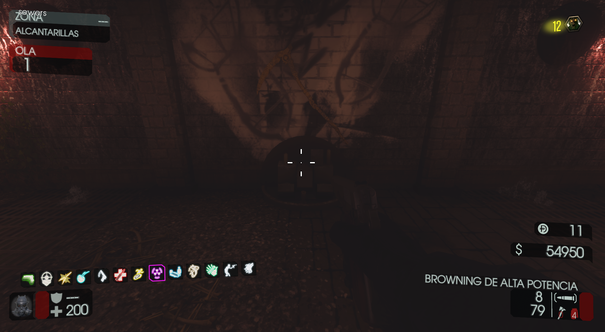
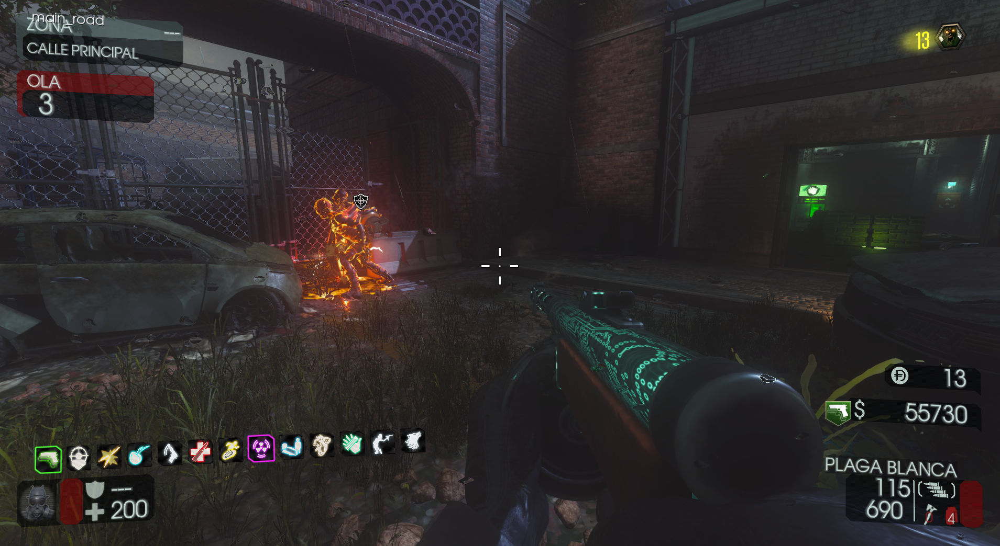
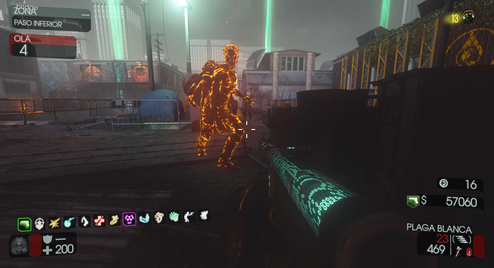
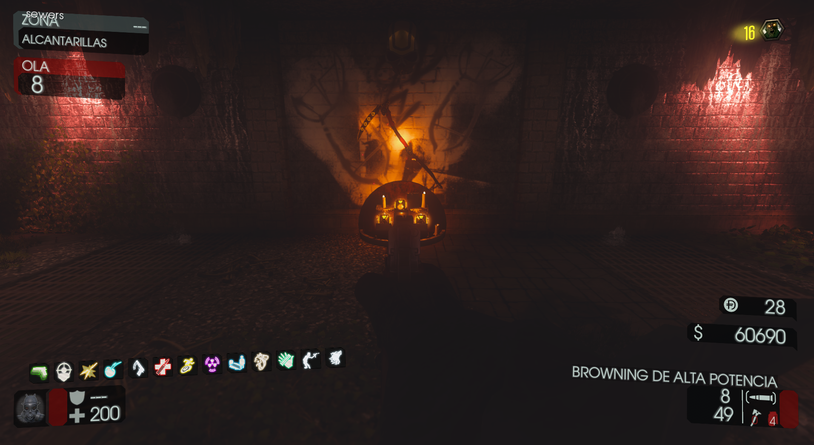
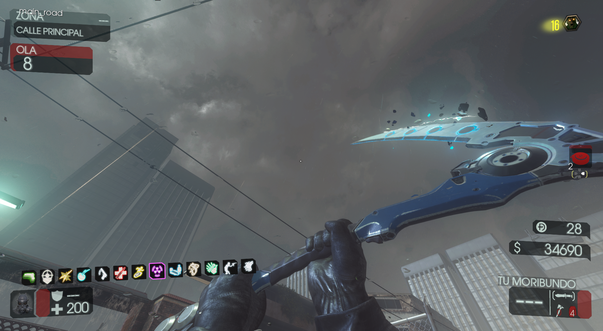

Guadaña (Rainy Death)

Requisitos:
Tener el Tomahawk y hacer alrededor de 60 kills con él .
Si hicimos las suficientes kills, al bajar a las alcantarillas veremos a la calavera goteando sangre.

Lanzaremos el Tomahawk a la pared y la puerta se abrirá.

Al entrar en la sala, podremos interactuar con el altar de la guadaña.

Entraremos en el Modo Sangre y tendremos que buscar uno de los siguientes portales:

Deberemos de atraer al zombi de fuego con la bomba, hasta el pilar y después matarlo.

Tendremos que repetir el paso del Modo Sangre un total de 3 veces (Cada vez que matemos al zombie con la bomba, tendremos que pasar de ronda para volver a entrar al Modo Sangre).
Si lo hicimos bien, los tres orbes aparecerán en el altar y al interactuar con ellos, se dispersarán por el mapa.
Tendremos que buscarlos y dispararles en varios lugares a cada uno para que vuelvan al altar.
Localizaciones orbe 1 (En el Spawn o el Patio):
Localizaciones orbe 2 (En toda la zona desde el Agua hasta el Garaje y Electricidad):
Localizaciones orbe 3 (En la Policía):


Cuando los tres orbes se encuentren de nuevo en el altar, podremos obtener la Guadaña.

Se puede mejorar en el PaP.
